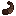

The Horned Sheep is a powerful mountain-dwelling sheep added by Earthify.
Unlike ordinary sheep, Horned Sheep possess large horns and will aggressively charge enemies, dealing heavy damage and knocking targets backwards.
Spawning
Horned Sheep naturally spawn in mountain biomes.
- Spawn Weight: 10
- Group Size: 3–6
- Biome: Mountains
Behavior
- Neutral mob.
- Can be bred using Wheat.
- Can be sheared like normal sheep.
- Defends itself using powerful charges.
- Can follow players using a Horned Sheep Horn.
Charging
Horned Sheep can enter an aggressive state and perform powerful rushing attacks.
A successful charge deals extra damage and launches enemies backwards with significant force.
Horns
Horned Sheep are born with a horn which may break after colliding with suitable blocks during a charge.
When broken, the horn drops as a Horned Sheep Horn item with a random instrument sound.
Horned Sheep without horns become much more cautious and may avoid goats instead of confronting them.
Shearing
Horned Sheep can be sheared just like ordinary sheep.
Shearing yields wool matching the Horned Sheep's current color.
Drops
| Mutton | 1 |
 Cooked Mutton
Cooked Mutton
|
1 (if killed while on fire) |
| Wool | Color matches the Horned Sheep |
|
 Horned Sheep Horn |
Dropped when a horn breaks |